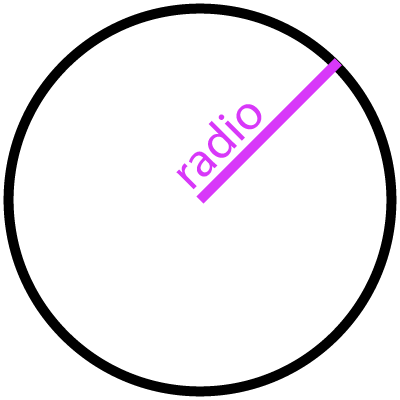

Esta calculadora te ayudaremos a encontrar el área y el perímetro de un círculo, además a esto en el siguiente parrafo puedes ver cuáles fueron las formulas usadas para poder hallar estas medidas
- Perimetro: Diámetro * π
- Área: Radio² * π